Alumnado y docentes
Reportan fallas desde el aula en segundos.
CampusCare conecta a estudiantes, docentes, personal técnico y administración en un solo flujo, desde la detección de una falla hasta su resolución con evidencia.
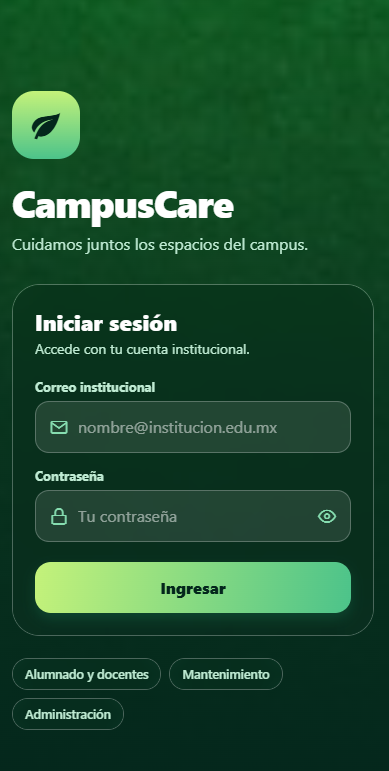
El deterioro de la infraestructura física —luminarias fundidas, contactos sin corriente, proyectores descalibrados, fugas o butacas rotas— afecta el aprovechamiento académico y la seguridad de la comunidad.
¿Por qué ahora? Semanas de espera para reparar una falla eléctrica crítica son un riesgo de seguridad y una fuga constante de recursos institucionales.
Meta: pasar de semanas a horas en el tiempo de respuesta.
Plataforma de reporte y gestión de mantenimiento universitario. Tres tipos de usuario, un solo flujo.
Reportan fallas desde el aula en segundos.
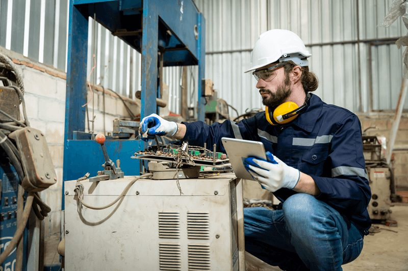
Reciben, resuelven y documentan órdenes de trabajo.
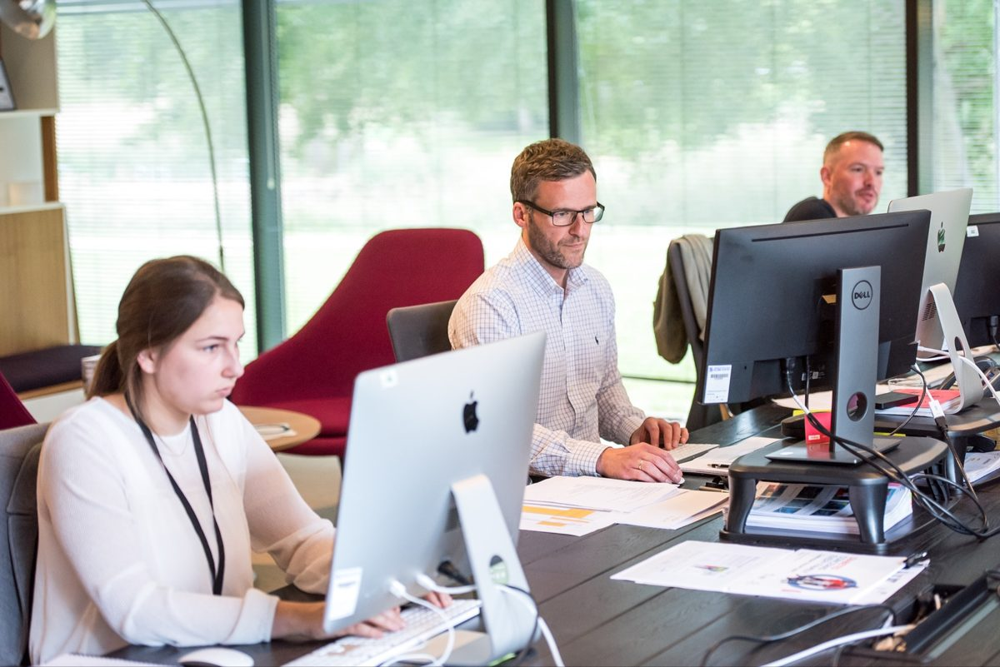
Da seguimiento y mide el desempeño.
Login con cuenta institucional y roles: alumno/docente, técnico y administrador.
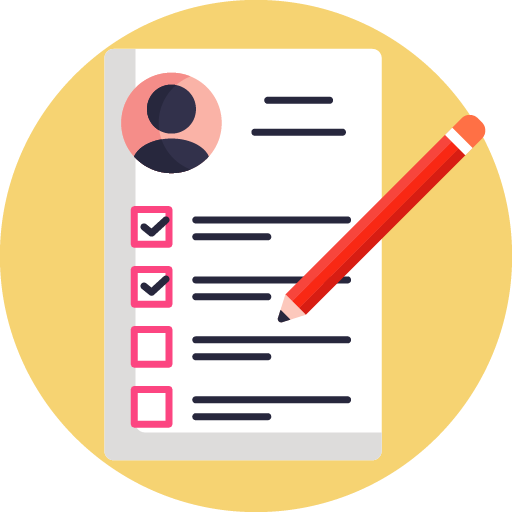
Escaneo de QR/NFC del aula, foto de la falla, categoría y severidad.
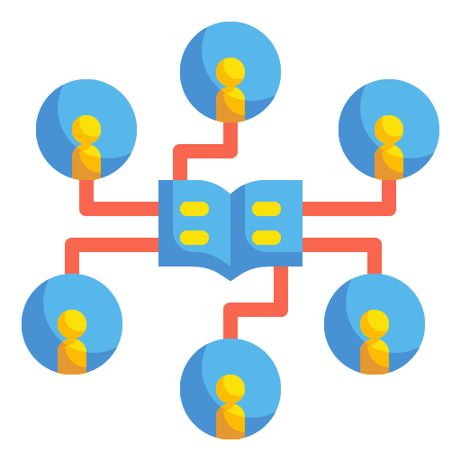
Abierto → Asignado → En proceso → Resuelto → Cerrado, con historial completo.
El técnico documenta la reparación con foto y notas antes de resolver.
El solicitante se entera en tiempo real de cada cambio de estado.
Estadísticas, tiempos de atención y zonas con más incidencias.
| Capa | Tecnología |
|---|---|
| App móvil | Android · Kotlin, Jetpack Compose, MVVM, CameraX, Room |
| API REST (Backend) | ASP.NET Core / Node.js · JWT · HTTPS |
| Base de datos | MySQL / PostgreSQL, esquema normalizado |
| Almacenamiento | Bucket en la nube para evidencia fotográfica |
CampusCare contribuye a tres Objetivos de Desarrollo Sostenible.
Meta 9.4. Moderniza la gestión operativa de los edificios universitarios mediante tecnología móvil y digitalización de procesos.
Meta 11.6. Facilita la detección inmediata de fugas de agua y consumos eléctricos anómalos para reducir el desperdicio de recursos.
Optimiza el ciclo de vida del mobiliario y equipo mediante mantenimiento preventivo y correctivo oportuno.
Recorrido visual por las pantallas de la app.
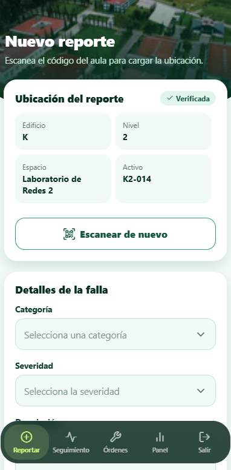
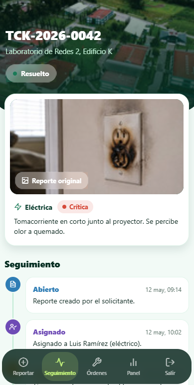
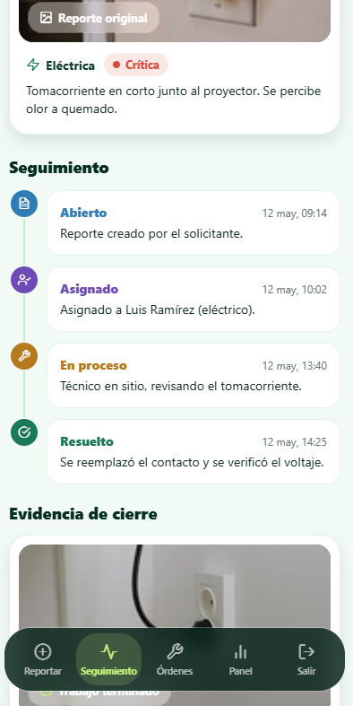
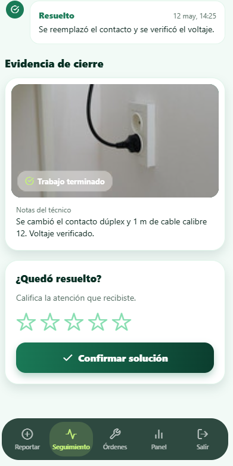
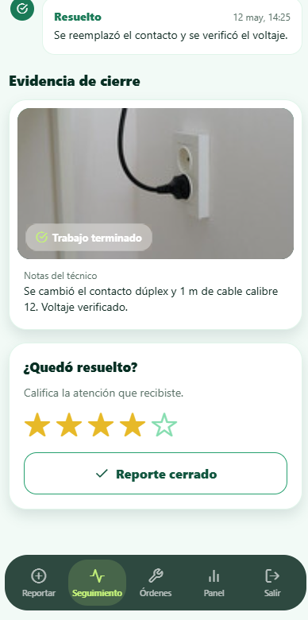
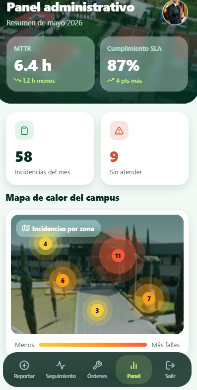
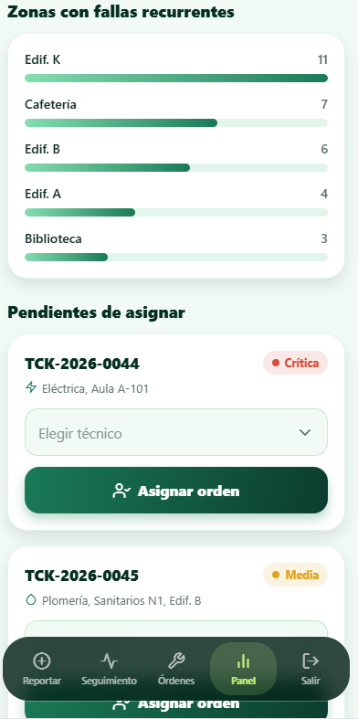
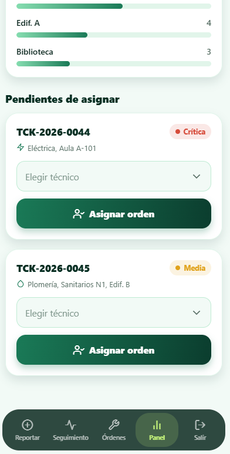
Demostración de CampusCare. Coloca tu archivo en video/campuscare.mp4.
Resumen del Project Vision Board / Modelo Canvas.
| Bloque | Descripción |
|---|---|
| Segmento de clientes | Universidades e institutos, direcciones de carrera, áreas administrativas y de mantenimiento. |
| Propuesta de valor | Reporte rápido con evidencia, trazabilidad completa y métricas para decidir mejor. |
| Canales | Instaladores APK, tiendas de aplicaciones, portal universitario y talleres de inducción. |
| Recursos clave | Código base, motor de reglas, desarrolladores, QA y asesores normativos. |
| Fuentes de ingresos | Licenciamiento institucional (B2B), personalización e integración, soporte y mantenimiento. |
| Estructura de costes | Desarrollo y soporte, infraestructura digital y capacitación. |
Se inicia sesión, se escanea el QR/NFC del espacio, se toma una foto de la falla y se elige categoría y severidad. La app genera un folio de seguimiento.
Recibes notificaciones push con cada cambio de estado del ticket y puedes ver la línea de tiempo en la app.
Un dashboard con KPIs, mapa de calor por edificio, zonas recurrentes y la lista de pendientes por asignar.
Cuéntanos qué te pareció CampusCare.